팀원
과제 입력만
추진현황 입력, 진척률 보기, 새 연도 만들기. 성과관리는 보이지 않습니다.
과제 입력에서 한 해 추진현황을 함께 채우고, 팀장은 그 과제를 성과관리로 가져와 평가·피어리뷰·면담까지 이어 갑니다. 같은 과제를 다시 입력하지 않습니다.
홈에서 할 일을 고르고, 머리글 맨 왼쪽 홈 버튼으로 언제든 돌아옵니다.
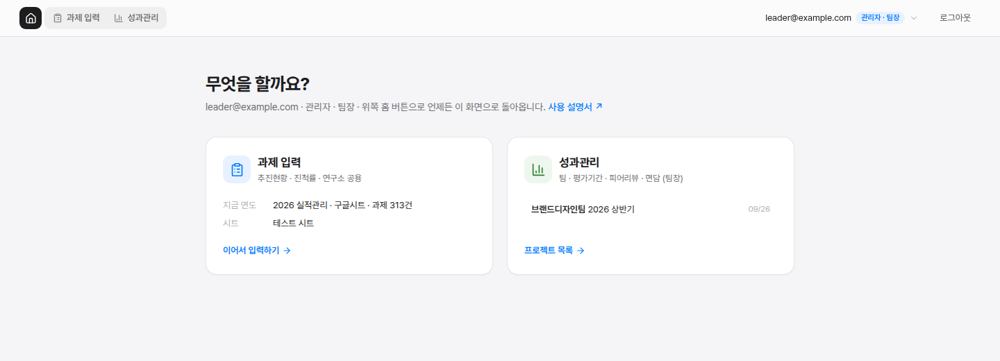
추진현황 입력, 진척률 보기, 새 연도 만들기. 성과관리는 보이지 않습니다.
프로젝트 · 평가과제 · 팀원 · 피어리뷰 · 평가 · 면담을 운영합니다. 머리글에서 두 영역을 바로 오갑니다.
과제 입력이 쓰는 구글시트를 연결하고, 연도 탭을 시트에 만들고, 팀원을 초대합니다.
Google 계정으로 시작을 누르고 회사 구글 계정으로 로그인합니다. 처음이면 구글시트 읽기 · 저장 권한을 허용합니다.
과제 입력 카드에는 지금 연도 · 시트 · 과제 수 · 저장 안 한 고침이, 성과관리 카드에는 최근 프로젝트가 보입니다.
머리글 오른쪽 계정 옆 배지(팀원 / 관리자 · 팀장)로 내 역할을 확인합니다.
머리글의 「2026 실적관리 ▾」에서 입력할 연도와 지난 연도를 고릅니다.
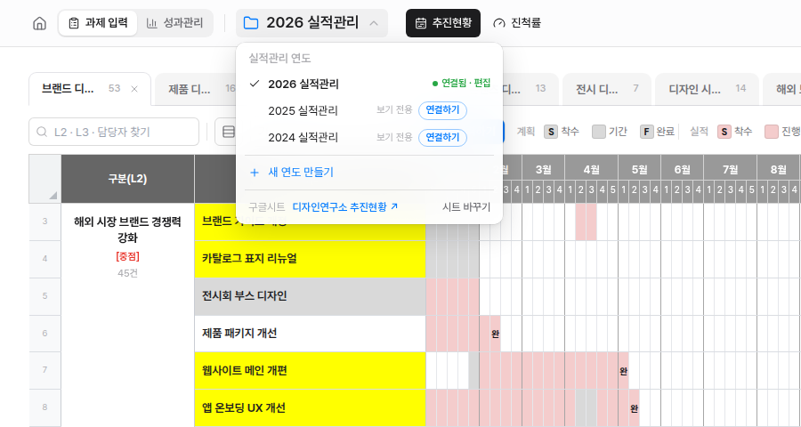
지금 입력하는 연도입니다. 여기서 고친 내용이 이 구글시트 탭에 저장됩니다.
지난 연도는 볼 수만 있습니다. 관리자는 연결하기로 그 탭을 입력하는 연도로 바꿀 수 있습니다.
지금 연도의 그룹(L1) · 구분(L2) · 열 구성을 이어받거나(완료 안 된 과제만 / 과제 모두 / 구분만) 빈 표로 시작합니다. 만든 연도는 이 브라우저에 저장되고, 관리자가 구글시트로 만들기로 시트에 탭을 만듭니다.
쓰지 않는 연도에 마우스를 올리면 ×가 나옵니다. 목록에서만 빠지고 구글시트 탭은 그대로입니다. 메뉴 아래 숨긴 연도 n개 다시 보이기로 되돌립니다.
그룹(L1) 탭별 일정표에서 과제와 일정을 입력하고 구글시트에 저장합니다.
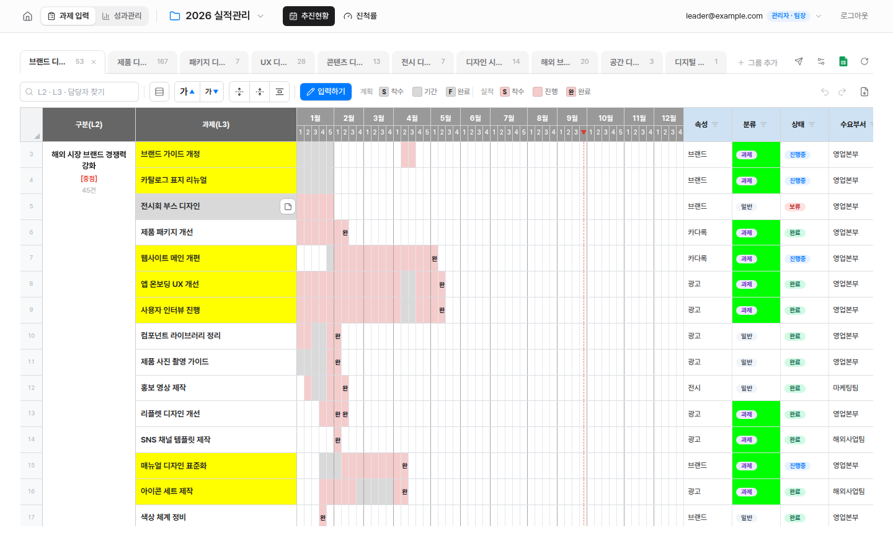
도구 줄의 파란 입력하기를 누르면 입력 모드가 됩니다. 끝나면 입력 끝내기를 누릅니다.
한 번 누르면 선택, 더블클릭하거나 바로 타자를 치면 입력입니다. Enter 반영, Esc 취소. 여러 칸은 끌거나 Shift+클릭으로 고릅니다.
칸을 고르면 위에 서식 막대가 뜹니다. 글자색 · 크기 · 굵게 · 기울임 · 취소선 · 정렬 · 병합/나누기를 고른 칸 전체에 적용합니다.
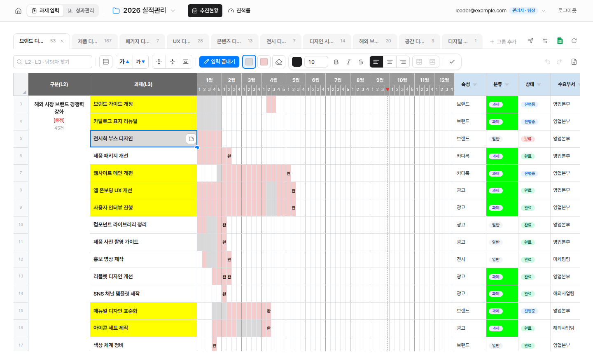
주 칸에 계획과 실적을 칠하면 진척률이 자동으로 계산됩니다.
입력 모드에서 계획(회색) · 실적(분홍) · 지우개를 고르고 주 칸을 누르거나 끌어서 칠합니다. 도구를 우클릭하면 색 팔레트가 열립니다.
계획이 끝나는 주에는 F, 실적이 끝나는 주에는 완이 자동으로 찍힙니다.
고친 내용은 먼저 이 브라우저에 쌓이고, 구글시트에 저장을 눌러야 시트에 들어갑니다. 되돌리기 ⌘/Ctrl+Z, 다시 하기 ⌘/Ctrl+Shift+Z.
엑셀 아이콘으로 지금 표를 받고, 팀장은 종이비행기 아이콘으로 그룹(L1)을 성과관리 과제리스트로 보냅니다.
추진현황의 일정 칸으로 착수 · 완료를 자동으로 세고, PPT로 보고합니다.
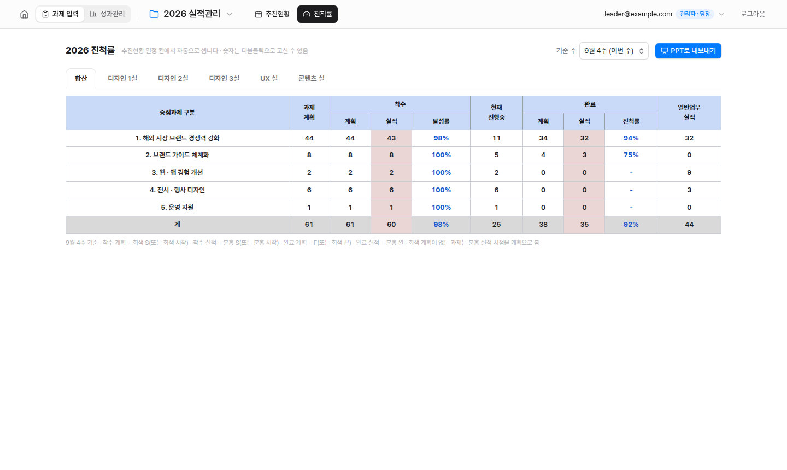
팀 · 평가기간 프로젝트를 만들고, 과제 입력의 추진현황에서 필요한 구분만 가져옵니다.
홈의 성과관리 카드에서 팀 만들기를 누르고, 팀 이름과 평가기간을 정해 평가 만들기를 누릅니다.
과제관리에서 추진현황에서 가져오기를 누르고 필요한 구분(L2)을 체크합니다. 담당자는 팀원으로 함께 추가됩니다.
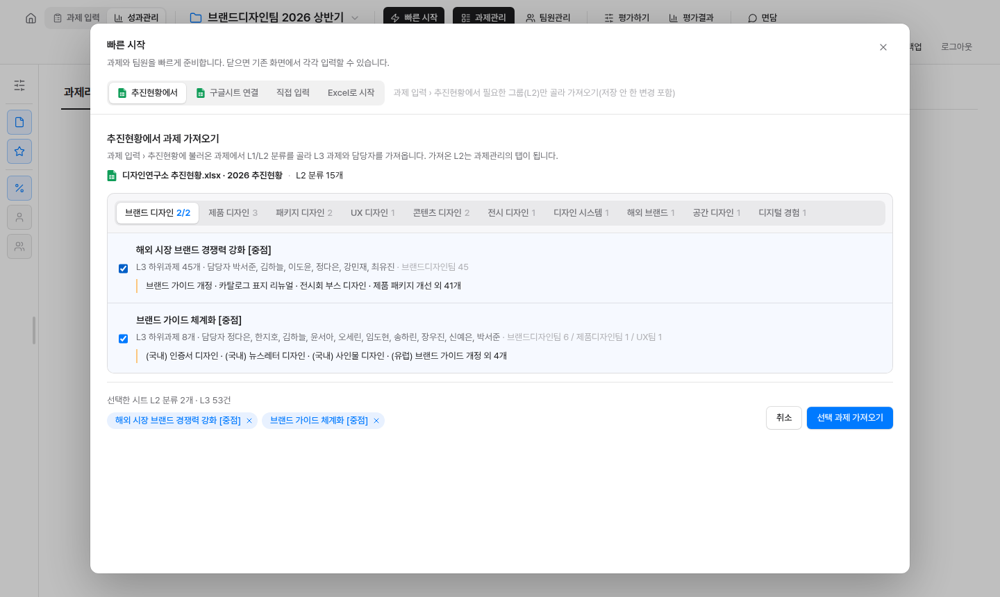
과제리스트에서 L3를 체크하고 평가과제로 묶기(여러 L3를 하나로) 또는 평가과제로 내보내기를 누릅니다.
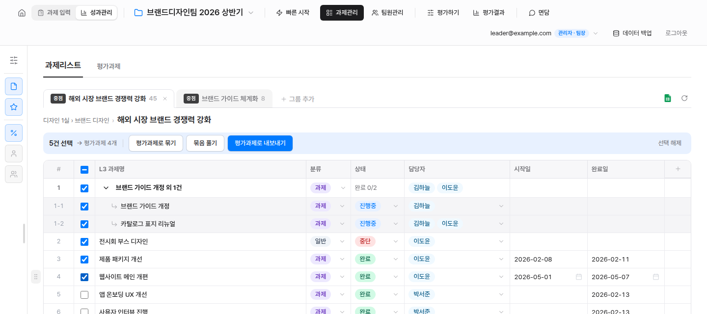
과제등급 · 성과등급 · 목표 · 성과를 표에서 바로 입력하고, 묶인 L3는 펼쳐서 봅니다.
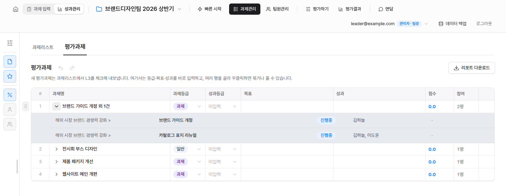
회사 e-HR에서 팀원별 종합 인사기록카드를 XLS로 받아 올리면 직급 · 입사일 · 직급 발령일 · 담당팀이 채워집니다.
ehr.osstem.com → 인사관리 → 인사기본에서 대상 팀원을 고르고 인사기록카드출력을 누릅니다.

프린트 팝업 위쪽의 저장 아이콘을 누르고 초록색 XLS를 고릅니다. 팀원마다 반복해 파일을 모읍니다.

성과관리 › 팀원관리 › 팀원에서 오른쪽 위 인사기록 불러오기를 누르고, 받은 파일을 끌어다 놓습니다(.xls · .xlsx, 여러 명 한 번에).
이름이 같은 팀원과 연결해 바뀌는 값만 보여 줍니다. 적용할 사람을 체크하고 n명 적용을 누릅니다. 팀원 목록에 없는 사람은 체크하면 새로 추가됩니다.
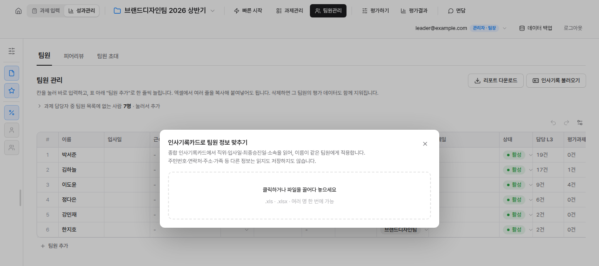
피어리뷰는 팀원별 엑셀 양식을 나눠 주고, 작성한 파일을 받아 올립니다.
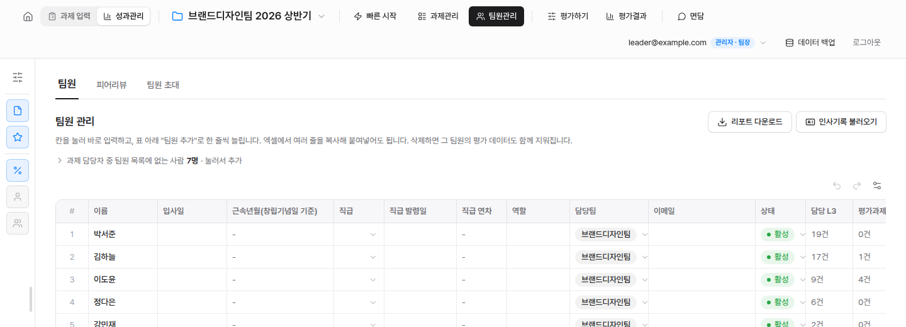
팀원관리 › 피어리뷰에서 엑셀 양식 받기를 누르면 팀원별 양식이 ZIP으로 내려받아집니다. 단순 순위(팀원 전체)와 과제별(함께한 평가과제마다) 중 고릅니다.
각자 자기 파일에 다른 팀원 순위를 1위부터 겹치지 않게 매기고, 사람마다 순위 근거를 꼭 적어 돌려줍니다.
받은 파일을 엑셀 올리기로 한꺼번에 올립니다. 순위가 겹치거나 근거가 빠진 파일은 반영하지 않고 이유를 보여 줍니다.
응답 현황 n/N명에서 누가 냈는지 보고, 못 받은 사람은 이름을 눌러 직접 입력합니다. 아래에서 평균 순위와 근거를 봅니다.
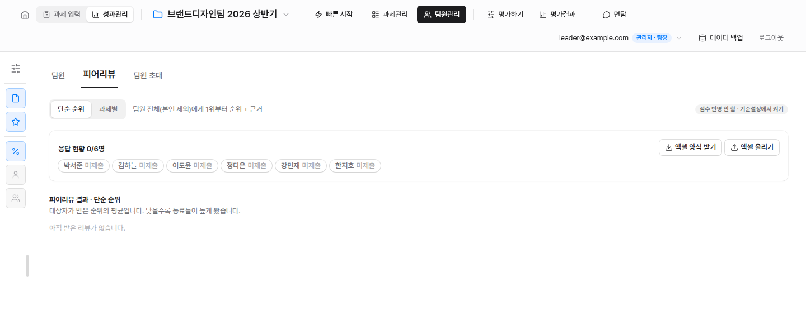
가져온 과제와 팀원 정보가 평가 · 결과 · 면담으로 이어집니다.
성과관리 데이터는 팀장 브라우저와 구글 드라이브에 저장됩니다.
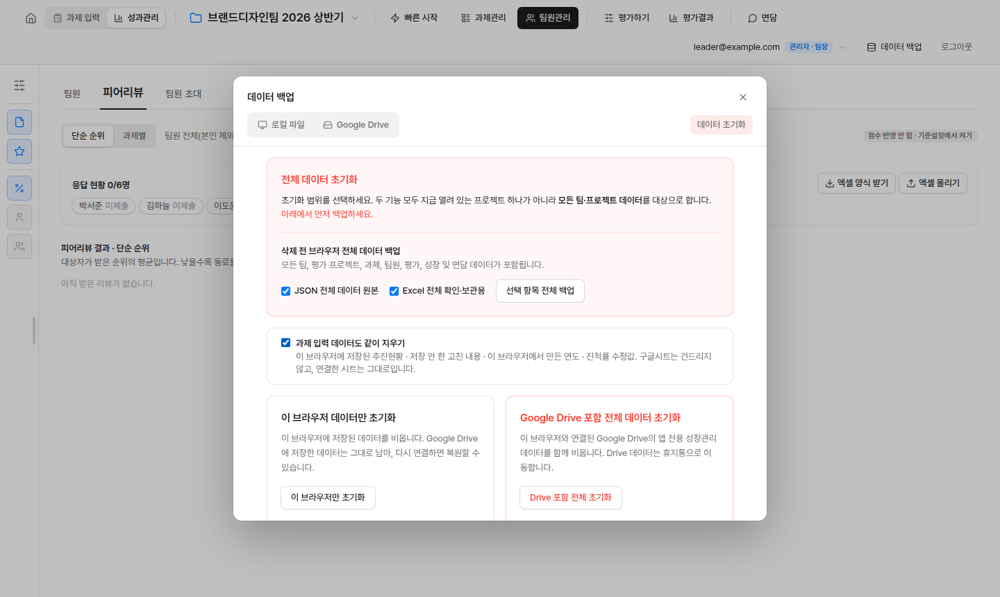
데이터 백업에서 JSON(복원용 원본)과 Excel(보관용 사본)을 받습니다.
이 브라우저만 또는 Google Drive 포함 전체를 고릅니다.
체크하면 이 브라우저에 저장된 추진현황 · 저장 안 한 고침 · 만든 연도 · 진척률 수정값도 지웁니다. 구글시트와 연결 설정은 그대로입니다.
별도 설치 파일 없이 브라우저에서 바로 앱으로 설치할 수 있습니다. 설치해도 데이터와 사용 방법은 같습니다.
앱을 연 뒤 주소창 오른쪽 설치 아이콘을 누릅니다. 없으면 Chrome 메뉴 → 전송, 저장, 공유 → 페이지를 앱으로 설치.
Chrome에서 앱을 열고 오른쪽 위 ⋮ → 홈 화면에 추가 또는 앱 설치.
Safari에서 앱을 열고 공유 → 홈 화면에 추가 → 추가.
막혔을 때 먼저 확인하세요.
연도 메뉴를 다시 열면 시트 목록을 새로 읽어 빠집니다. 탭은 남겨 두고 목록에서만 빼려면 그 연도의 ×를 누르세요.
새 버전이 올라온 직후일 수 있습니다. ⌘/Ctrl+Shift+R로 강력 새로고침하세요.
브라우저에 구글 계정이 여러 개 로그인돼 있을 때 생깁니다. 안내 아래 계정 골라서 다시 연결을 눌러 계정을 직접 고르세요.
로그인한 계정이 그 구글시트의 편집자가 아닙니다. 시트 소유자에게 편집 권한을 요청하세요.
성과관리는 팀장 계정에만 보입니다. 계정 옆 배지가 「팀원」이면 과제 입력만 쓸 수 있습니다.
두 영역의 데이터는 따로 저장됩니다. 초기화할 때 「과제 입력 데이터도 같이 지우기」를 체크하세요.
검색 결과가 없습니다.